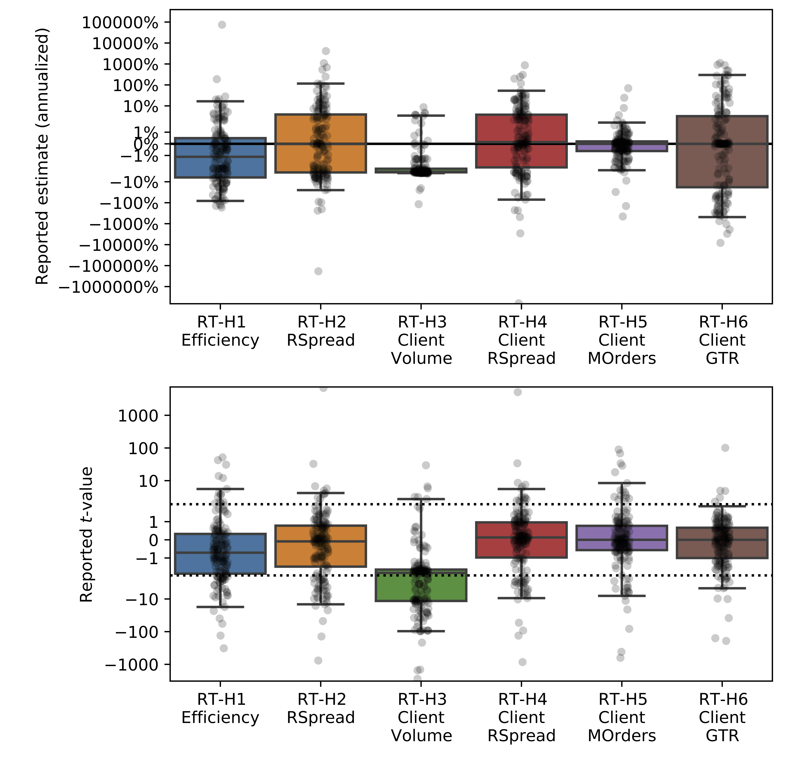
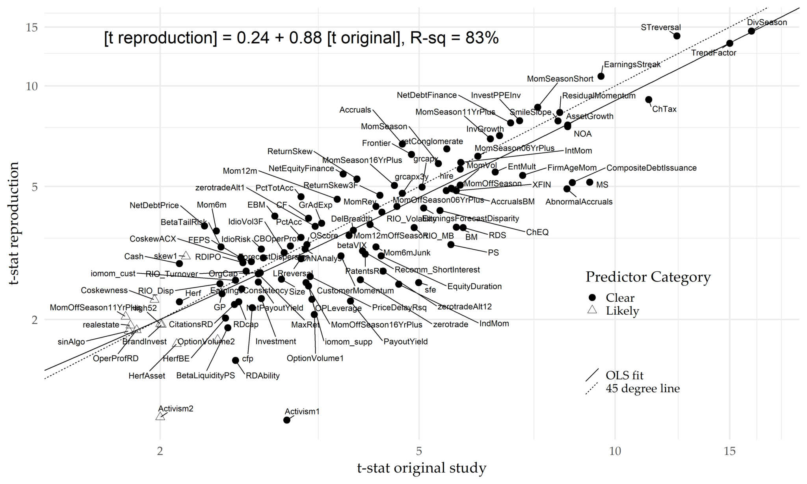
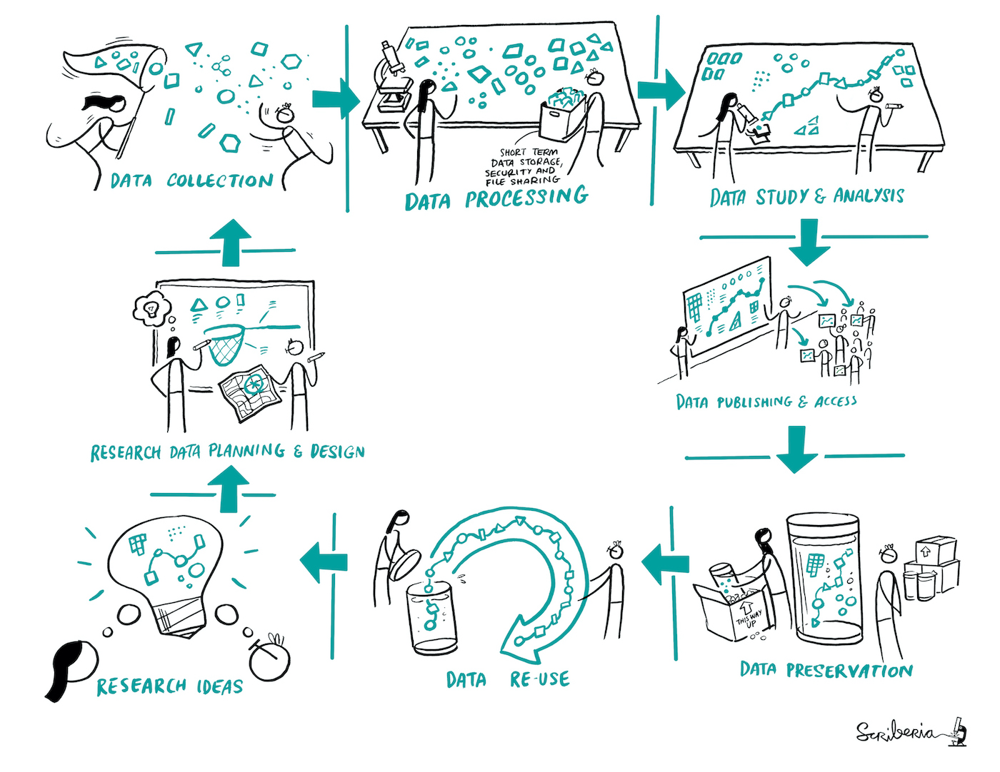

MATH60207: Séance 10
Plan
- Problèmes méthodologiques versus fouille de données
- Répétabilité et reproductibilité
Recherche réplicable en finance empirique
Recherche scientifique idéalisée :
- Bénéficie de la collaboration
- Ouverte et de la transparente
- Bénéficie d’une méthodologie claire
Recherche réplicable en finance empirique
Recherche empirique en finance dans le milieu universitaire :
- Des incitatifs pas toujours alignés sur la transparence. La publication aide à:
- Réputation
- Financer des projets futurs.
- Sécurité d’emploi.
- Opportunités de consultation.
- Une transparence limitée est courante (ensembles de données propriétaires.)
Idéalement, la recherche impliquerait des objectifs où les conclusions peuvent bénéficier au public, d’où l’idée de publier.
Cela a-t-il du sens dans la finance empirique ?
Recherche réplicable en finance empirique
Recherche empirique en finance dans l’industrie :
- La transparence entrave les opportunités de profit
- La collaboration est limitée
- La méthodologie est souvent idiosyncratique
Cela est dû au fait que l’asymétrie de l’information sur les marchés est ce qui crée des opportunités pour les investisseurs.
- Si vous avez plusieurs traders maximisant le profit avec une information asymétrique, vous ne pouvez pas avoir des marchés totalement efficaces (Grossman and Stiglitz 1980)
Recherche réplicable en finance empirique
Question : Si les incitatifs sont parfois alignés contre la recherche financière empirique collaborative et open source, devrions-nous nous attendre à ce que la recherche soit reproductible?
Question de suivi : si les incitatifs font que la publication est hautement récompensée, pouvons-nous nous attendre à ce que la recherche publiée soit une recherche “authentique”?
C’est une question importante en finance empirique :
- Des études récentes en finance empirique, notamment en matière d’évaluation des actifs, se sont tournées vers le test de la reproductibilité des résultats antérieurs.
- La plupart des revues nécessitent désormais la disponibilité du code pour la réplicabilité et le partage de données non exclusives.
- Les meilleures revues en finance ont récemment retiré leurs articles en raison de problèmes de réplication.
Problèmes méthodologiques vs data-mining
Data mining, alias p-hacking:
- Test répétés d’hypothèses “aléatoires” jusqu’à ce que vous obteniez des résultats significatifs.
- L’objectif est de générer des résultats exagérés conformément à un incitatif (c’est-à-dire la publication).
- Pratique contraire à l’éthique qui doit être évitée.
- Peut être intentionnel, mais aussi non intentionnel.
Sur-ajustement (overfitting):
- Problème méthodologique.
- Apparait naturellement au cours de toute analyse statistique.
- Rend difficile la généralisation d’un modèle et la performance hors-échantillon.
En conclusion, en tant que bons statisticiens, notre objectif est d’éviter le data mining de notre méthodologie de recherche tout en limitant les biais statistiques le cas échéant, et de reconnaître ces problèmes lors de l’évaluation des résultats d’autres chercheurs.
Surajustement (Overfitting)
Estimation de plusieurs modèles différents dans la même analyse statistique sur les mêmes données et sélection de celui qui optimise une fonction objectif:
- R^2
- Fonction de log-vraisemblance
- Critères d’information
- Profits générés (backtest)
Les modèles souffrant de surajustement tendent à obtenir de mauvais résultats hors échantillon.
Surajustement - Un modèle simple
Soit X_{t},Y_{t} sont nos variables avec Y_{t}=X_{t}\beta+\varepsilon_{t}.
- E\left( \varepsilon_{t}X_{t}\right) =0 et \varepsilon_{t}\sim N(0,\sigma) i.i.d.
- ${ X_{1,t},Y_{1,t}} $ sont les données de notre échantillon principal.
- ${ X_{2,t},Y_{2,t}} $ sont les données pour un deuxième échantillon.
Problème
Nous voulons utiliser X pour prédire Y.
Supposons que nous voulions minimiser E\left[ \left( Y_{t}-X_{t}\theta\right) ^{2}\right].
Idéalement, nous devrions utiliser \theta = \beta. Mais \beta est inconnu.
Si seulement nous avions \left\{ X_{1t},Y_{1t}\right\}, nous pourrions E\left[ \left( Y_{1,t}-X_{1,t}\theta\right) ^{2}\right] \Rightarrow\widehat{\theta}=\widehat{\theta}_{OLS}.
Surajustement - Un modèle simple
Fait
Q_{1}=\sum_{t=1}^{T}\left( \left( Y_{1t}-X_{1t}\beta\right)^{2}-\left( Y_{1t}-X_{1t}\widehat{\theta}\right)^{2}\right)
E\left( Q_{1}\right) =k\cdot\sigma^{2} où k= dimension de X
- OLS a tendance à sous-estimer l’erreur de prédiction (c’est-à-dire “surajuster”)
Fait
E\left[ Q_{2}\right] =E\left[ \sum_{t=1}^{T}\left( \left( Y_{2t}-X_{2t}\beta\right)^{2}-\left( Y_{2t}-X_{2t}\widehat{\theta}\right)^{2}\right) \right] =-k\cdot\sigma^{2}
- Le surajustement en échantillon nuît à notre performance hors échantillon.
- Plus nous surajustons, plus cela nuit à notre prévision.
- Pour éviter le surajustement, nous devrions utiliser des modèles avec des performances similaires en échantillon et hors échantillon et des techniques telles que la validation croisée.
Test d’hypothèses multiples
Revue de la littérature - Ioannidis (2005)
De nombreux éléments peuvent causer des résultats biaisés et invalides :
- Les études dans le domaine sont plus petites
- Plus grand nombre et moindre préselection des relations testées
- Une plus grande flexibilité dans la conception, les définitions, les résultats et les modes d’analyse
- Plus grand intérêt financier et autre pour le préjudice
- Plus d’équipes sont impliquées dans un domaine scientifique à la recherche de signification statistique
Il conclut qu’il est probable que la plupart des découvertes scientifiques sont plus fausses que vraies, étant des mesures précises de biais plutôt que des résultats rigoureux.
Nous avons vu que dans le cadre de finance empirique, les incitations financières et la flexibilité dans la conception peuvent jouer un rôle important dans la conduite des résultats.
Test d’hypothèses multiples
Revue de la littérature - Ioannidis (2005)
Pourquoi la plupart des résultats médicaux sont-ils faux ?
Définitions
- H_{0} : Une hypothèse nulle soit H_{0}=T ou H_{0}=F.
- S : Un test statistique de H_{0}; soit S=t ou S=f.
- \alpha : \Pr\left( S=f|H_{0}=T\right) C’est le taux d’erreur de type I (a.k.a. niveau de significativité.) Typiquement 5%.
- 1-\beta : \Pr\left( S=f|H_{0}=F\right) C’est la puissance du test (c.-à-d. 1- le taux d’erreur de type II).
- R : fraction de H_{0} qui sont F relativement à la fraction qui sont T. Si nous testons seulement un H_{0} \Rightarrow \Pr\left( H_{0}=F\right)=\frac{R}{R+1}.
- PPV : Valeur prédictive positive \equiv\Pr\left( H_{0}=F|S=f\right).
Voir xkcd
Ioannidis (2005)
Le théorème de Bayes implique:
\begin{align*} PPV & =\Pr\left( H_{0}=F|S=f\right) =\frac{\Pr\left( H_{0}=F,S=f\right)}{\Pr\left( S=f\right)}\\ &=\frac{\left( 1-\beta\right) \cdot\Pr\left( H_{0}=F\right)}{\left( 1-\beta\right) \cdot\Pr\left( H_{0}=F\right) +\alpha\cdot\Pr\left( H_{0}=T\right)}\\ &=\frac{\left( 1-\beta\right) \cdot R}{\left( 1-\beta\right) \cdot R+\alpha} \end{align*}
\therefore Les résultats de recherche sont plus vraisemblablement bons que faux
\iff\left( 1-\beta\right) \cdot R>\alpha\approx0.05
Ioannidis (2005)
Implications
- Résultats d’essais de faible puissance (c.-à-d. de petit (1-\beta) \rightarrow5\%) sont plus susceptibles d’être faux que vrais si R<1.
- Méfiez-vous des petits échantillons.
- La théorie aide si elle augmente R.
- La théorie peut-elle justifier n’importe quoi?
Ioannidis (2005)
Tests répétés
- n \equiv nombre de H_{0} testés (mais non rapportés) pour produire 1 résultat statistiquement significatif rapporté.
Maintenant,
PPV = \frac{\left( 1-\beta^{n}\right) \cdot R}{\left( 1-\beta^{n}\right) \cdot R+\left[ 1-\left( 1-\alpha\right) ^{n}\right]} \approx \frac{\left( 1-\beta^{n}\right) \cdot R}{\left( 1-\beta^{n}\right) \cdot R+\left[ 1-.95^{n}\right]}
Les résultats de la recherche sont plus vraisemblablement bons que faux
\iff\left( 1-\beta^{n}\right) \cdot R>1-\left( 1-\alpha\right) ^{n}
Augmenter n peut rendre plus difficile la satisfaction de cette condition!
Test d’hypothèses multiples
Revue de la littérature - Chordia, Goyal, and Saretto (2020)
Les études d’évaluation des actifs cherchent à répondre à une variété de questions de recherche, mais elles partagent généralement:
- Une question courante (par exemple, les rendements boursiers attendus sont-ils prévisibles?)
- Au moins un jeu de données commun (c’est-à-dire CRSP).
Des raisons suffisantes pour que les chercheurs s’inquiètent de MHT dans les études de prévisibilité financière.
Les inférences ne peuvent être faites qu’en formulant des hypothèses explicites sur le processus de génération de données et la capacité des chercheurs à filtrer les stratégies non valables.
Chordia, Goyal, and Saretto (2020)
Dans leur étude, les seuils ajustés pour les t-statistiques des alphas en séries temporelles et les pentes des régressions FM transversales sont respectivement de 3.8 et 3.4, impliquant que 1,028 et 4,790 tests doivent être tentés pour avoir une probabilité de 50% de respecter le seuil.
Important Il n’y a pas de norme absolue de \alpha pour les tests d’hypothèses, généralement, seulement des directives acceptées pour la recherche statistique.
Important Considérez également que les auteurs ont besoin d’une théorie, d’une motivation ou d’une histoire pour être publiés. Même chose en finance d’entreprise.
➡️ Cela augmente R dans les formules d’Ioannidis.
Problèmes additionnels
De nombreux autres problèmes potentiels préoccupent le domaine de la finance empirique. Nous allons discuter de trois :
- Intégrité des données et révisions de données.
- Erreurs non standard (c’est-à-dire incertitude d’estimation au niveau du chercheur).
- Utilisation de ML/IA.
Intégrité des données et révisions de données
Noisy Factors – Akey, Robertson, and Simutin (2023)
Comprendre les variations entre les seuils de significativité des facteurs Fama-French en fonction de la date à laquelle ils ont été téléchargés.
Ils constatent que les rendements des facteurs diffèrent significativement selon millésime des facteurs, qui cause un tiers des anomalies portefeuilles long-short à perdre leur significativité statistique.
Comment est-ce possible ?
- Petites divergences dans la façon dont les données ont été recueillies.
- Différences de calcul dans les effets d’arrondi.
- Corrections rétroactives.
Question Si de si petits écarts en méthodologie ont un impact si important sur les résultats de l’étude, quels autres problèmes cachés pourraient exister qui sont actuellement négligés par les chercheurs ?
Noisy Factors – Akey, Robertson, and Simutin (2023)
Données historiques de la Wayback Machine!
Noisy Factors – Akey, Robertson, and Simutin (2023)
HML est le facteur le plus affecté.

Noisy Factors – Akey, Robertson, and Simutin (2023)
\alpha des portefeuilles bien diversifiés sont significativement affectés.

Erreurs Non-Standards
Non-Standard Errors – Menkveld et al. (2024)
Le premier article empirique crowdsourcé en Économie/Finance. Le projet cherche à exposer la variation entre les chercheurs pour les résultats qu’ils rapportent en testant indépendamment les mêmes hypothèses sur le même échantillon.
343 auteurs provenant de 34 pays répondant aux mêmes questions d’évaluation d’actifs :
- Quelle est l’ampleur des erreurs non standards en économie financière ?
- Les NSE peuvent-elles être “expliquées” dans la coupe transversale des chercheurs ?
- La rétroaction par les pairs réduit-il les erreurs non standards ?
- Les chercheurs sont-ils conscients de l’ampleur des NSE ?
Non-Standard Errors – Menkveld et al. (2024)

Design Choices and Machine Learning – M. Chen, Hanauer, and Kalsbach (2024)

Problèmes additionnels avec les LLMs
Réplicabilité
- Les modèles “fermés” (comme OpenAI) changent constamment
- Ce sont des modèles probabilistes, donc les résultats changent à chaque exécution
Degrés de liberté du chercheur:
- Certains changements même mineurs au prompt peuvent changer complètement les résultats
- Modèles probabilistes, donc simplement en répétant l’expérience, on peut obtenir des résultats différents
- Milliards de paramètres, on peut arriver à tout avec un peu de “finetuning”
Crise de réplication en finance ?
- Baker (2016) : 1,500 scientifiques lèvent le voile sur la reproductibilité
- Plus de 70% des chercheurs ont essayé et échoué à reproduire les expériences d’autres scientifiques, et plus de la moitié ont échoué à reproduire leurs propres expériences.
- Bien que 52% des personnes interrogées conviennent qu’il y a une “crise” de reproductibilité significative, moins de 31% pensent que l’échec à reproduire des résultats publiés signifie que le résultat est probablement faux, et la plupart affirment qu’ils font toujours confiance à la littérature publiée.
- Harvey (2019) : Les politiques de réplication dans les meilleures revues en finance sont à la traîne par rapport aux revues en économie.
- Harvey était éditeur du Journal of Finance et a tenté de développer une politique unifiée dans toutes les principales revues de finance
Crise de réplication en finance ?
- Jensen, Kelly, and Pedersen (2023) : Y a-t-il une crise de réplication en finance ?
- La majorité des facteurs de tarification d’actifs : (1) peuvent être répliqués, (2) peuvent être regroupés en 13 thèmes, dont la majorité sont des parties significatives du portefeuille tangentiel, (3) fonctionnent hors échantillon dans un nouvel ensemble de données large couvrant 93 pays, et (4) donnent des preuves qui sont renforcées (non affaiblies) par le grand nombre de facteurs observés.
- Harvey (2022) : Soyez sceptique à l’égard de la recherche en gestion d’actifs
- Soutient que les incitatifs économiques déforment les résultats à la fois dans la recherche académique.
- Fišar et al. (2024) : La reproductibilité dans les articles publié dans Management Science a considérablement augmenté suite aux politiques obligatoires de partage de code et de données.
Un problème dans l’industrie ?
Harvey (2022) : oui, mais les incitatifs font en sorte de le réduire.
I believe p-hacking is less of a problem in asset management than in academia—in particular, less of a problem in the proprietary research that is the foundation for a product. The reasons are simple. First, in the presence of a performance fee, the asset management company’s research needs to be optimized in a way that maximizes the chances of repeatable performance. This means the asset manager does not choose the best-performing backtest, because it is the one that is most likely to be overfit. If the manager were to launch a backtest-overfitted strategy, it would likely fail and thereby generate no performance fees. The second reason is reputation. Academic tenure has no equivalent in asset management. If an asset manager’s products disappoint because of overfitting, the firm’s investors will flee. This market mechanism naturally minimizes the overfitting. That said, asset management companies still produce a substantial amount of low-quality research. Similar to the academic research, investors need to be skeptical.
Problèmes de réplication
Littérature – Hou, Xue, and Zhang (2020)
L’un des groupes qui a tenté de mesurer la robustesse des études passées en évaluation d’actifs en réévaluant la force des facteurs établis.
Conception de l’étude :
- Contrôle pour les micro-caps (en supprimant leurs impacts)
- À la recherche d’une significativité élevée (statistiques t élevées).
Conclusion La plupart des anomalies ne sont pas reproductibles empiriquement, et celles qui sont répliquées avec succès le sont avec des magnitudes qui sont souvent inférieures.
Problèmes de réplication
Littérature – Hou, Xue, and Zhang (2020)
Accent sur l’impact du contrôle pour les actions micro-cap :
- Comptent pour 3% de la valeur boursière mais 60% des actions.
- En utilisant des rendements pondérés par égal, de nombreuses études surpondèrent considérablement leur impact.
- Dans la pratique, les coûts élevés de transaction des micro-caps peuvent expliquer l’existence d’anomalies jugées significatives.
Est-il réaliste de considérer les stratégies significatives presque uniquement sur le comportement de ce (petit) sous-échantillon d’actions?
La plupart des investisseurs ne prioriseront pas les micro-caps dans la conception de leur stratégies!
Conclusion Bien que l’influence des micro-caps soit écrasante dans les études de tarification des actifs, elle est presque inexistante dans la gestion d’argent réelle.
De l’espoir?
Littérature – A. Y. Chen and Zimmermann (2021)
Pour Chen et Zimmerman, les études de réplication passées mesurent la prévisibilité en s’écartant des méthodes utilisées dans la recherche originale. - Si la méthode est différente, les résultats seront sûrement différents !
Important La réplication doit être réalisée dans les mêmes conditions exactes que dans l’étude originale. La méthodologie doit être suivie précisément et les hypothèses doivent être extrêmement limitées.
- De nombreuses réplications montrent une statistique t de 6,0 ou plus, avec une valeur correspondante d’environ 0,000000002, qui est EXTRÊMEMENT difficile à générer par data mining.
A. Y. Chen and Zimmermann (2021)

Conclusion
Importance des pratiques éthiques parmi les scientifiques:
- Utiliser des méthodes statistiques correctes.
- Bonnes intentions et éviter les manipulations.
- Limiter les incitatifs négatifs.
- Promouvoir la transparence et la collaboration.
Il n’y a pas moyen d’y échapper, si votre méthode initiale est fausse, chaque conclusion qui en découle est fausse.
Rampini, Viswanathan, et Vuillemey (2019)
Retracted: Risk Management in Financial Institutions
The authors hereby retract the above article, published in print in the April 2020 issue of The Journal of Finance. A replication study finds that the replication code provided in the supplementary information section of the article does not reproduce some of the central findings reported in the article. Upon reexamination of the work, the authors confirmed that the replication code does not fully reproduce the published results and were unable to provide revised code that does. Therefore, the authors conclude that the published results are not reliable and that the responsible course of action is to retract the article and return the Brattle Group Distinguished Paper Prize that the article received. The authors deeply regret the damage this caused to the journal and the scholarly community. The specific contributions of the authors to the article were as follows: the first and second author provided the theoretical hypothesis; all three authors jointly designed the empirical approach and identification strategy; the third author constructed and handled the data, implemented the empirical analysis, and provided the empirical results as well as the replication data and code. The third author states that the original data and code that produced the published results were lost. The first and second author were not notified of the loss of the original data and code at the time it occurred and had no prior knowledge of the issues with the replication data and code provided to the journal.
The Turing Way: Une méthodologie de recherche “idéale”
Alors que les avancées technologiques deviennent prédominantes dans la recherche académique et industrielle, les scientifiques ont la possibilité de rendre leur travail propice à la réplication avec une documentation adéquate et une exposition rigoureuse.
Le projet The Turing Way :
- Lancé en 2019
- Guide pour les chercheurs décrivant les meilleures normes en termes de méthodologie scientifique
- Open-source
- Multi-disciplinaire
➡️ Lorsque les chercheurs emploient la transparence dans leur recherche - en d’autres termes, lorsqu’ils documentent et partagent correctement les données et les processus associés à leurs analyses - la communauté scientifique au sens large est en mesure d’économiser un temps précieux lors de la reproduction ou de l’élaboration des résultats publiés.
The Turing Way: Cycle de Recherche

The Turing Way: Définitions

The Turing Way: Guide pour une recherche réplicable

The Turing Way: Avantages Supplémentaires
- Suivre un historique complet de votre recherche
- Faciliter la collaboration et le processus de révision
- Publier des recherches validées et éviter la désinformation
- Rédiger vos articles, thèses et rapports efficacement
- Obtenir le crédit pour votre travail de manière équitable
- Assurer la continuité de votre travail
The Turing Way: Obstacles à la reproductibilité
- Incitations limitées à se donner des preuves contre soi-même
- Biais de publication en faveur de résultats novateurs
- Tenus à des normes plus élevées que les autres
- Non considérés pour une promotion
- Big data et infrastructure computationnelle complexe
- Être reproductible ne signifie pas que la réponse est correcte
- Prend du temps
- Supporter des utilisateurs additionnels
- Exige des compétences additionnelles
Références

MATH60207